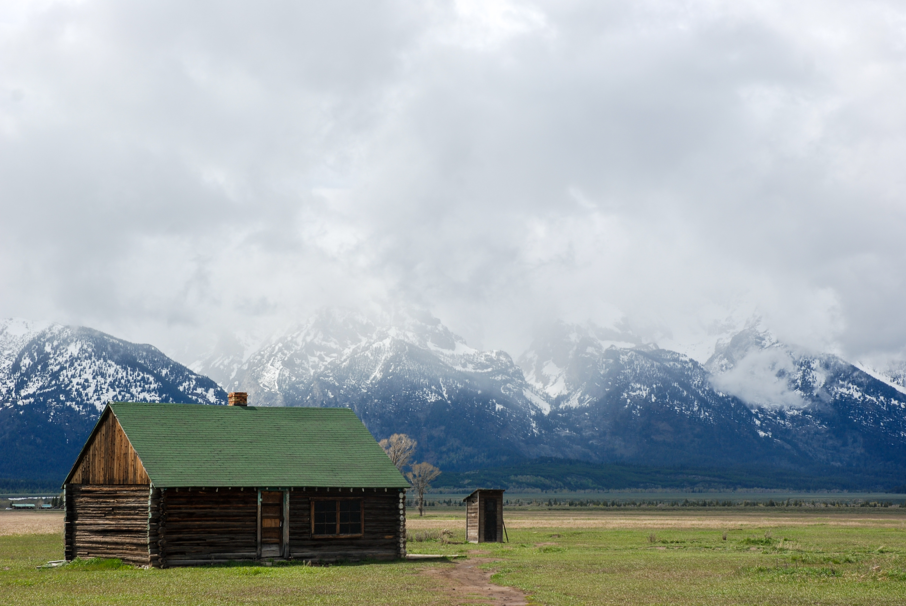

LANDSCAPES
A study of light, form, and atmosphere. The quiet beauty of untouched places.

PORTRAITURE
Aiming to reflect identity through subtle expression and clean, intentional framing.

FILM
The work is tactile; loading film, developing by hand, scanning, cutting, archiving. It offers a timeless feel that digital can't replicate.